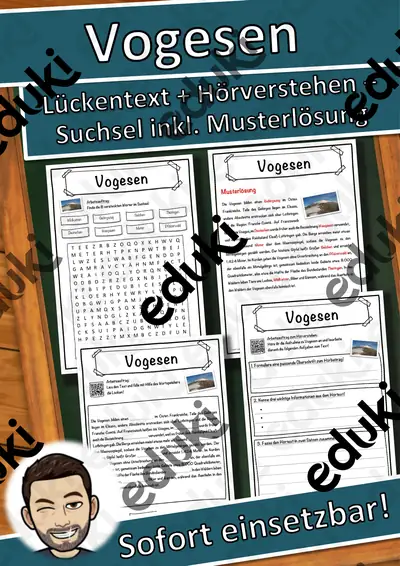
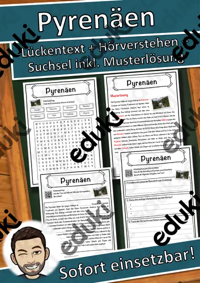
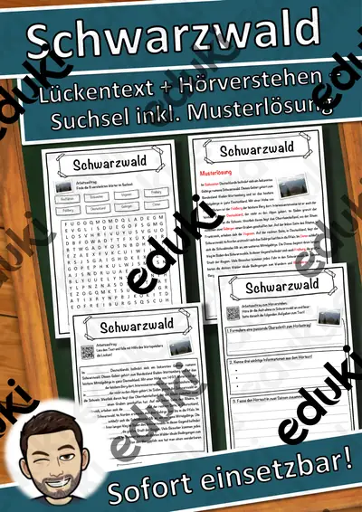

Alpen und Gebirge: Arbeitsblätter für Klasse 4–8 (Erdkunde)
Gebirge prägen Landschaft, Klima und Wirtschaft. Der Unterricht behandelt Entstehung, Höhenstufen und Nutzung, von den Mittelgebirgen bis zu Alpen und Himalaya.
Zum Themenkern zählen Alpen, Mittelgebirge und Höhenstufen. Als Vertiefung bieten sich Zugspitze und Himalaya an, am Ende steht oft Gebirgsentstehung.
In den Lehrplänen der Länder ist das Thema im Fach Erdkunde verankert, meist in den Klassen 4 bis 8. Die Schülerinnen und Schüler beschreiben Gebirge und erklären Unterschiede zu Mittelgebirgen.
Im Alltag einer Lehrkraft zählt, dass Material sofort einsatzbereit ist: Die Blätter zu Alpen und Gebirge greifen Mittelgebirge, Höhenstufen und Zugspitze auf, lassen sich ausdrucken und kommen mit Lösungen, damit die Vorbereitung kurz bleibt. Leistungsstarke und schwächere Lesende erhalten über die Lesespurgeschichten Texte in drei Stufen.
20 passende Materialien stehen bereit, etwa Volksmusik in den Alpen, Ein Tag in den Alpen und Auf den Spuren der Alpen. Vertreten sind 3 Lesespurgeschichten und 17 Lückentexte mit Hörverstehen; die Stufen reichen über Klasse 5–7. Ein Geländemodell aus Salzteig verdeutlicht Höhenlinien und Täler.
Das gehört zum Thema
Passende Arbeitsblätter und Materialpakete

Volksmusik in den Alpen – Jodeln, Hackbrett und Alphorn – Lesespurgeschichte mit Rätselaufgaben (Klasse 7)

Ein Tag in den Alpen – Lesespurgeschichte mit Rätselaufgaben (Klasse 5)

Auf den Spuren der Alpen – Lesespurgeschichte mit Rätselaufgaben (Klasse 5)

Vogesen Lückentext mit Wortspeicher Hörverstehen und Suchsel

Pyrenäen Lückentext mit Wortspeicher Hörverstehen und Suchsel

Schwarzwald Lückentext mit Wortspeicher Hörverstehen und Suchsel
Zugspitze Lückentext mit Wortspeicher Hörverstehen und Suchsel

Rocky Mountains Lückentext mit Wortspeicher Hörverstehen und Suchsel

Himalaya Lückentext mit Wortspeicher Hörverstehen und Suchsel

Jura (Kanton) Lückentext mit Wortspeicher Hörverstehen und Suchsel

Jura (Gebirge) Lückentext mit Wortspeicher Hörverstehen und Suchsel

Harz (Mittelgebirge) Lückentext mit Wortspeicher Hörverstehen und Suchsel

Gebirge Lückentext mit Wortspeicher Hörverstehen und Suchsel

Erzgebirge Lückentext mit Wortspeicher Hörverstehen und Suchsel

Mount Everest Lückentext mit Wortspeicher Hörverstehen und Suchsel

Bayerischer Wald Lückentext mit Wortspeicher Hörverstehen und Suchsel

Karpaten Lückentext mit Wortspeicher Hörverstehen und Suchsel

Anden Lückentext mit Wortspeicher Hörverstehen und Suchsel

Altai-Gebirge Lückentext mit Wortspeicher Hörverstehen und Suchsel

Alpen Lückentext mit Wortspeicher Hörverstehen und Suchsel
Häufige Fragen
Für welche Klassenstufe passen die Arbeitsblätter zu Alpen und Gebirge?
Passend sind Klasse 5–7. Von den 20 Titeln wenden sich die meisten an Klasse 6, einige lassen sich differenzierend auch in benachbarten Stufen nutzen.
Welche Inhalte decken die Materialien zu Alpen und Gebirge ab?
Inhaltlich reicht die Auswahl von Alpen über Mittelgebirge und Höhenstufen bis zu Himalaya; Details stehen bei den einzelnen Materialien.
Wie setze ich Alpen und Gebirge im Unterricht ein?
Ein Geländemodell aus Salzteig verdeutlicht Höhenlinien und Täler. So entsteht aus den Blättern eine kleine Einheit, die sich auf zwei bis drei Stunden verteilen lässt.
Mehr Material nach Fach und Klasse
- Alle Materialien Deutsch
- Arbeitsblätter Deutsch Klasse 4
- Arbeitsblätter Deutsch Klasse 5
- Arbeitsblätter Deutsch Klasse 6
- Arbeitsblätter Deutsch Klasse 7
- Arbeitsblätter Deutsch Klasse 8
- Unterrichtsmaterial Klasse 4
- Unterrichtsmaterial Klasse 5
- Unterrichtsmaterial Klasse 6
- Unterrichtsmaterial Klasse 7
- Unterrichtsmaterial Klasse 8
Verwandte Lehrplanthemen
- Bundesländer und Landeshauptstädte (Erdkunde, Klasse 3–7)
- Energie, Rohstoffe und Umwelt (Erdkunde, Klasse 4–10)
- Erdbeben und Vulkane (Erdkunde, Klasse 5–9)
- Rhein, Donau und die großen Flüsse (Erdkunde, Klasse 4–8)
- Heimat, Region und Bundesländer-Vergleich (Erdkunde, Klasse 3–8)